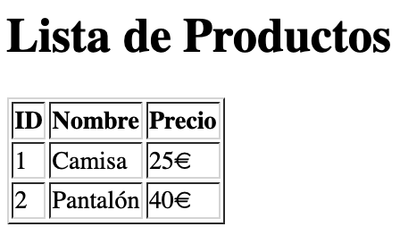

4. Integración de JS con HTML y DOM
4.0 Aspectos previos
4.0.1 ¿Qué es un Servicio Web?
Un servicio web es una aplicación que responde a peticiones HTTP realizadas por un cliente (normalmente un navegador) y devuelve información en forma de páginas web, datos JSON o cualquier otro contenido.
4.0.2 Estructura Básica de una Petición Web
Cuando un usuario accede a una página web, el proceso que ocurre es el siguiente:
- El usuario introduce una URL en su navegador.
- El navegador envía una petición HTTP al servidor correspondiente.
- El servidor recibe la petición y genera una respuesta (un archivo HTML, datos de una base de datos, etc.).
- El navegador recibe la respuesta, interpreta el código HTML y ejecuta cualquier JavaScript incluido.
El servidor responde con un código de estado HTTP , estos son los más comunes:
| Código | Descripción |
|---|---|
| 200 | OK |
| 404 | No encontrado |
| 500 | Error interno |
Este flujo es sin memoria: cada petición es independiente y el servidor no recuerda estados anteriores (a menos que se use almacenamiento en cookies o bases de datos).
4.0.3 ¿Qué es una URL y cómo funciona HTTP?
- URL (Uniform Resource Locator): Dirección única que identifica un recurso en la web (ejemplo:
https://www.ejemplo.com/productos). - HTTP (HyperText Transfer Protocol): Protocolo que define cómo se comunican los navegadores con los servidores web.
- Métodos HTTP más comunes:
GET: Solicita información (ejemplo: cargar una página).POST: Envía datos al servidor (ejemplo: un formulario).PUT: Actualiza información en el servidor.DELETE: Elimina datos en el servidor.HEAD: Solicita solo los encabezados de una respuesta.
4.0.4 Frontend vs Backend
La programación web se divide en dos partes principales:
| Frontend (Cliente) | Backend (Servidor) |
|---|---|
| Se ejecuta en el navegador del usuario. | Se ejecuta en el servidor web. |
| Usa HTML, CSS y JavaScript. | Usa lenguajes como PHP, Node.js, Python, etc. |
| Se encarga de la apariencia y la interacción con el usuario. | Se encarga de la lógica del negocio y la base de datos. |
JavaScript es el único lenguaje que puede trabajar en ambos lados:
- En el frontend (en el navegador) para la interacción con el usuario.
- En el backend (con Node.js) para la gestión de datos y lógica del servidor.
4.0.5 Caso de Uso: Carga de una Página Web con Código de Ejemplo
Para entender mejor cómo funciona una petición HTTP en una aplicación web, veamos un caso práctico donde un usuario accede a una página de productos y el servidor responde generando un HTML dinámico con los datos de una base de datos.
üìå Paso 1: Petici√≥n GET desde el Navegador
Cuando el usuario escribe www.ejemplo.com/productos en la barra de direcciones, el navegador envía una petición HTTP GET al servidor:
GET /productos HTTP/1.1
Host: www.ejemplo.com
User-Agent: Mozilla/5.0
Accept: text/html
üìå Paso 2: Servidor Node.js recibe la petici√≥n
En el backend, el servidor recoge la petición GET y consulta la base de datos para obtener los productos:
Servidor Node.js con Express
| Servidor Node.js que responde con HTML | |
|---|---|
1 2 3 4 5 6 7 8 9 10 11 12 13 14 15 16 17 18 19 20 21 22 23 24 25 26 27 28 29 30 31 32 33 34 35 36 37 38 39 40 41 42 43 44 45 46 47 48 49 50 51 52 53 54 55 56 57 58 59 60 | |
üìå Paso 3: El servidor env√≠a la respuesta al navegador
Una vez que la base de datos devuelve los productos, el servidor genera un documento HTML y lo envía como respuesta:
HTTP/1.1 200 OK
Content-Type: text/html
<!DOCTYPE html>
<html lang="es">
<head>
<meta charset="UTF-8">
<meta name="viewport" content="width=device-width, initial-scale=1.0">
<title>Lista de Productos</title>
</head>
<body>
<h1>Lista de Productos</h1>
<table border="1">
<tr>
<th>ID</th>
<th>Nombre</th>
<th>Precio</th>
</tr>
<tr>
<td>1</td>
<td>Camisa</td>
<td>25€</td>
</tr>
<tr>
<td>2</td>
<td>Pantalón</td>
<td>40€</td>
</tr>
</table>
</body>
</html>
üìå Paso 4: El navegador renderiza la página
El navegador recibe el HTML y lo interpreta para mostrar la lista de productos en pantalla.
Este flujo explica cómo funciona una aplicación web desde la petición hasta la respuesta. Una vez comprendido este proceso, podemos empezar a integrar JavaScript en el navegador para mejorar la interactividad de la página web.
